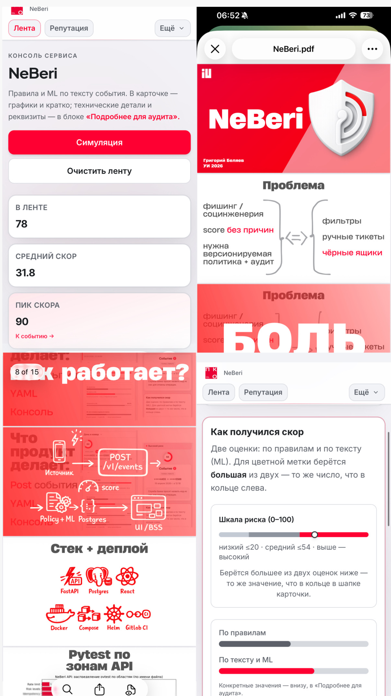

01 / главный кейс · самостоятельная разработка
Full-stack + MLNEBERI.
Скоринг риска SMS и звонков.
С объяснением каждого решения.
Проект для задачи МТС Защитник: объединить правила и ML-анализ текста, сохранить события и показать оператору, откуда взялась оценка риска.
- Моя роль
- Самостоятельно разработал систему: исследование и ML, API, базу данных, интерфейс, тесты и конфигурацию деплоя.
- Реализация
- FastAPI и PostgreSQL, правила в YAML, текстовый классификатор, React-консоль. Docker Compose для локального запуска, Helm для Kubernetes.
- Результат
- Сквозной сценарий от приёма события до оценки риска и объяснения в интерфейсе. Код, тесты и инструкции запуска доступны в репозитории.
Проект признали лучшим на курсе и пригласили меня в команду. Предложение не принял: на тот момент не было подходящей мне позиции.
- React
- TypeScript
- FastAPI
- PostgreSQL
- scikit-learn
- Docker
- Kubernetes

интерактивный разбор
Что влияет
на уровень риска?
Меняйте оценку правил, оценку ML и вес модели. Система смешивает оценки, но не позволяет ML снизить уровень риска, заданный правилами.
Демонстрация расчёта из проекта с заданными вручную оценками и без дополнительного бонуса. Модель здесь не запускается. Балл риска — не вероятность мошенничества.
Логика в исходном коде/ 100
Смесь: 65 · по правилам: 40 → итог: 65
0–20 низкий · 21–54 средний · 55–100 высокий